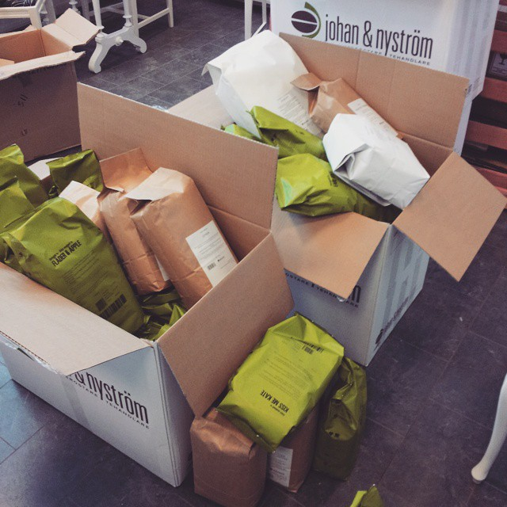
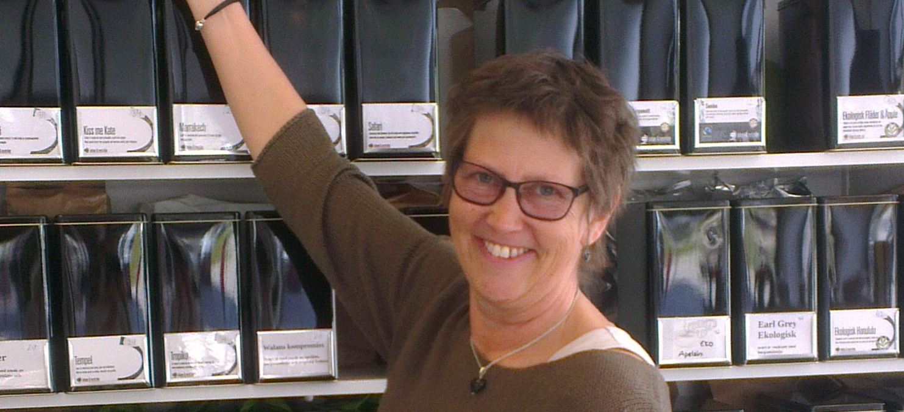

I centrala Motala på Repslagaregatan 15.
Vi säljer teer i lösvikt samt kaffe för den som föredrar det. Det finns även choklad och annan konfektyr samt kex och marmelad. Ni har möjlighet att slå er ner och njuta av en kopp te i vår lokal eller om du har lite bråttom går det bra att ta koppen med sig.
Ni får gärna följa oss via facebook på En kopp te, eller instagram på enkoppteab. Där har vi tävlingar där man har chansen att vinna teer. Så gå in och gilla så har du chansen att vinna.
Välkomna önskar Frida och Anki Gunnbäck
 Välkommen in
Välkommen in
Skorpor
Massor av te
 Fina koppar
Fina koppar
 Gott med te
Gott med te